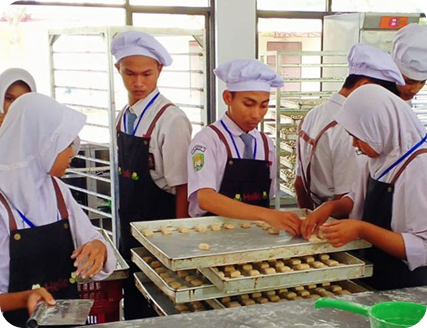
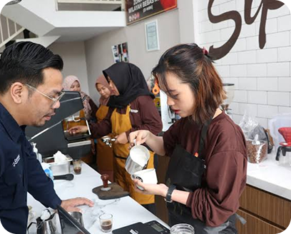

Suasana & Produk Kami
Kami menghadirkan pengalaman berkesan melalui kombinasi sajian kuliner berkualitas dan suasana tempat yang nyaman. Setiap hidangan pastry dan racikan kopi yang disajikan dibuat dengan dedikasi tinggi oleh para talenta muda berbakat, mengikuti standar profesional untuk memastikan kepuasan terbaik bagi setiap pengunjung.

Foto 1 (Produksi Pastry)

Foto 2 (Barista & Kopi)

Foto 3 (Suasana Cafe)